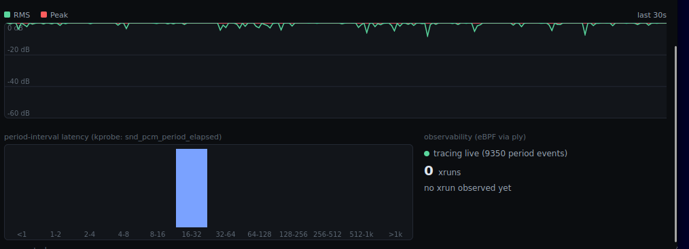

eBPF in the same dashboard
The goal of this step
Step 04 shows what the audio sounds like. This step shows what the kernel is doing to deliver it: how regularly the ALSA period interrupt actually fires, and whether the stream ever underruns — measured with real kprobes on the hot path, and drawn into the same dashboard rather than a separate tool.
This is the half of the project I care most about. It's also the step where three separate things failed silently, which turned out to be the most useful part.
Turning on the tracing subsystem
Same config-fragment mechanism as step 03 — a new observ.cfg pulled in by the same
linux-xlnx_%.bbappend:
# meta-aurascope/recipes-kernel/linux/linux-xlnx/observ.cfg
CONFIG_BPF=y
CONFIG_BPF_SYSCALL=y
CONFIG_BPF_JIT=y
CONFIG_BPF_EVENTS=y
CONFIG_KPROBES=y
CONFIG_KPROBE_EVENTS=y
CONFIG_UPROBES=y
CONFIG_FTRACE=y
CONFIG_FUNCTION_TRACER=y
CONFIG_DYNAMIC_FTRACE=y
CONFIG_TRACEPOINTS=y
CONFIG_PERF_EVENTS=y
CONFIG_DEBUG_FS=y
CONFIG_DEBUG_INFO=y
CONFIG_DEBUG_INFO_BTF=y
Silent failure #1 — BTF never built
After flashing, /sys/kernel/btf/vmlinux didn't exist. Checking what the kernel had
actually been built with, rather than what I'd asked for:
$ zcat /proc/config.gz | grep DEBUG_INFO
CONFIG_DEBUG_INFO_NONE=y
Not what the fragment requested, and no build error. The reason is in
lib/Kconfig.debug in the kernel source:
config DEBUG_INFO_BTF
depends on PAHOLE_VERSION >= 116
PAHOLE_VERSION is computed by probing for pahole on PATH
at configure time. No pahole in the build environment means the version reads as zero, the
dependency fails, and because DEBUG_INFO is a choice group, the whole
thing falls back to DEBUG_INFO_NONE. A requested option didn't just fail to apply
— it silently selected its own opposite.
# linux-xlnx_%.bbappend
DEPENDS += "pahole-native"
The toolchain gap, and choosing ply
The plan was a libbpf + CO-RE program: compile with clang -target bpf, generate a
skeleton with bpftool, ship a loader. Checking whether that was reachable from this
layer stack:
- No
meta-clanglayer, and no clang recipe anywhere in poky or meta-openembedded. - No
bpftoolrecipe either. libbpfitself is available — but the compiler needed to produce an object for it isn't.
Adding a layer and a from-source LLVM build to compile two kprobes is disproportionate. The alternative is ply: a dependency-free dynamic tracer that compiles its own BPF bytecode, no clang or LLVM involved, already packaged in meta-oe. One line in the image recipe:
IMAGE_INSTALL:append = " ... ply"
Proving it works at all, on the real board, before designing anything around it:
$ ply 'kretprobe:vfs_read { @["size"] = quantize(retval); }'
That produced a correct histogram — confirming kprobes, kretprobes, map aggregation and the SIGINT-triggered dump all work on this kernel, with no BTF needed anywhere.
Silent failure #2 — the kprobe that was right and useless
The plan's hook for the "ALSA write path" was __snd_pcm_lib_xfer. I'd confirmed the
symbol was real by reading sound/core/pcm_lib.c in the fetched kernel source. It
attached without complaint. It produced zero hits — while audio was visibly,
correctly streaming through the step 04 dashboard.
The answer was on the running board, in the PCM's own parameters:
$ cat /proc/asound/card0/pcm0c/sub0/hw_params
access: MMAP_INTERLEAVED
__snd_pcm_lib_xfer is only
reached through snd_pcm_read() / snd_pcm_write() — the
file_operations handlers behind the read/write syscall path. This device uses
ALSA's mmap ring-buffer path instead: userspace maps the buffer directly and coordinates with
ioctls, so the audio data never passes through a read() at all. A perfectly valid
kprobe on a function this data path never calls looks exactly like a broken kprobe.
The fix was picking hooks that don't care how userspace gets at the buffer. Both were confirmed against the kernel source, then live-tested:
| Symbol | Why it's access-mode-agnostic |
|---|---|
snd_pcm_period_elapsed | Called by the USB Audio driver's URB-completion handler every period, whatever userspace is doing. |
__snd_pcm_xrun | The real underrun/overrun path, likewise independent of access mode. |
Live check: 184 hits in 4 seconds. The device runs
period_size = 1024 at 48 kHz, which predicts 21.3 ms per period; 184 in
4 s is 21.7 ms. Close enough to be the same number, which is what confirms the probe
is measuring the thing it claims to measure.
Silent failure #3 — output that never arrived
The design is deliberately minimal on the ply side. Two probes, each printing one character; all the timing and bucketing happens in my own C code, timestamped on receipt:
kprobe:snd_pcm_period_elapsed { printf("P\n"); }
kprobe:__snd_pcm_xrun { printf("X\n"); }
Which raises a buffering problem. The plan assumed a -u unbuffered flag — it exists
on ply's GitHub HEAD. The recipe pins an older SRCREV, and checking out that exact
commit shows the full option string:
sopts = "c:dehkSTv"
No u. Confirmed on target: ply -u ... fails with
invalid option -- 'u'.
"P\n" writes would
accumulate for roughly two thousand events before anything was delivered. Not dropped, not
errored: just silently held. The dashboard would have sat there reading nothing from a tracer
that was working perfectly.
The fix needs no flag and no new package — give ply a pseudo-terminal instead of a pipe, and
glibc line-buffers it because it believes it's talking to a terminal. That's
openpty() before the fork, costing one extra link flag (-lutil).
What health.c does
- Writes the two-line ply script to
/tmp/aurascope-health.ply. openpty(), then fork/exec ply with the child's stdout on the pty slave.- A reader thread blocks on
fgets()from the master and timestamps each line on arrival withCLOCK_MONOTONIC. P→ delta since the previousP, bucketed into one of 12 log2 millisecond bins.X→ incrementxrun_total, recordxrun_last_ms.- A
SIGTERM/SIGINThandler kills the ply child, so stopping the daemon doesn't orphan a trace running forever. - Failure is non-fatal — if ply won't start, the audio dashboard carries on without the health panel.
Keeping ply to "an event happened, say so" also sidesteps its typed-time and aggregation-map formatting entirely. There's no parsing to get wrong, and no dependency on output formats that could shift between ply versions.
One feed, not two
The health data merges into the same SSE frame as the audio, so the client has one
EventSource and no possibility of two streams disagreeing about what time it is:
"health": { "ok": true, "xrun_total": 0, "xrun_last_ms": 0,
"period_hist": [0,0,0,0,0,9350,0,0,0,0,0,0] }
The client gains a histogram with 12 buckets — <1, 1-2,
2-4 … 512-1k, >1k ms — bars turning orange once a gap
reaches the 32 ms buckets, well past the ~21 ms norm. Alongside it, the xrun counter
and how long into the run the last one happened.

- Level history (last 30 s) — red peak pinned near 0 dB, green RMS just below it and dipping constantly across the whole window. This is real program material, so that movement is the music, not a fault.
- Period-interval latency — one bar, in the
16-32ms bucket, every other bucket empty. That is 9350 consecutive kprobe hits without a single interval landing anywhere else. - Observability —
tracing live (9350 period events)confirms ply is attached and delivering;0 xrunswithno xrun observed yetmeans__snd_pcm_xrunhas never once been reached.
One bar in the right bucket is the good outcome: the period interrupt is arriving on schedule and the stream isn't starving. A second bar appearing further right is the interesting failure, and is precisely what this panel exists to catch.
Verifying before touching the board
The pty trick and the bucket arithmetic are both easy to get subtly wrong, so both were tested
on the host first — ply swapped for a shell loop emitting P every 20 ms and
X every fifteenth line, run for two seconds:
ply_ok=1, xrun_total=2, xrun_last_ms=603
period_hist: 0 0 0 0 0 39 0 0 0 0 0 0
39 events in the [16,32) ms bucket, matching the 20 ms stand-in interval, and
both xrun markers counted. That validates the buffering fix and the bucket maths end to end
before any of it depends on hardware.
Everything else was checked against primary sources rather than memory: ply's option string and
grammar against its pinned SRCREV rather than HEAD, and every kernel symbol against
the actual fetched linux-xlnx 6.12.40 tree in build/tmp/work-shared/. Given that
two of the three failures on this page came from trusting a plan over the running system, that
isn't ceremony.
Honest gaps
- The histogram is cumulative, not a rolling window — over a long uptime, recent behaviour gets diluted by everything before it. A decaying or windowed histogram is the obvious next move.
- No libbpf/CO-RE path. ply is the backend. Worth revisiting if meta-clang and bpftool ever land in this layer stack.
- No xrun has been observed yet, so the counter is correct-by-construction rather than correct-by-demonstration. Unplugging the USB cable mid-stream should provoke one; until that's done, that half is untested against a real event.
- ply's own formatting was sidestepped, not characterised. Treating it as a bare event source avoids the question rather than answering it.
The rig this ran on
Everything on this page came off three boards on a desk. Worth a photo, because a couple of the physical details are exactly the things that cost time earlier in the project:
![Three development boards on a white surface. Left: an nRF5340-DK with a microphone module wired to its header by coloured jumper leads, green LEDs lit, a micro-USB cable leaving the bottom. Top right: a second nRF5340-DK with green LEDs lit and a micro-USB cable in its nRF5340 USB port. Bottom right: a white Digilent Arty Z7-20 board with a Zynq-7000 chip, the black USB cable from the second nRF board plugged into its type-A USB HOST socket, a white Ethernet cable, and a barrel-jack power lead, with a red LED lit.](img/setup.jpg)
- The microphone is wired, not simulated. Those coloured leads on the left board go from an I2S microphone straight onto the gateway's header. That is where the audio in every chart on this page originates.
- The receiver's cable is in the right socket. It goes to the
nRF5340 USBport, not theIMCU USBdebug port next to it. Only one of those two carries the USB Audio Class device; the other just talks to the debugger. Plugging into the wrong one gives you a board that looks connected and enumerates nothing. - That cable lands in the Arty's type-A
USB HOSTsocket — the port brought up by the device tree and kernel config in step 03. - Power comes from the barrel jack, not USB. The jumper is set to the external supply, which is what finally let the host port source VBUS — the fix that ended step 03 with the card appearing. The UART console keeps working regardless.
- The green LEDs on both nRF boards are the streaming indicators. Lit on the gateway and the receiver at the same time means the broadcast is up and synced at both ends.
Files
| Path | What it does | |
|---|---|---|
| new | .../aurascope-dash/files/health.c, health.h | ply child, pty reader thread, histogram and xrun counters |
| new | recipes-kernel/linux/linux-xlnx/observ.cfg | BPF, kprobes, ftrace, perf events |
| changed | .../files/http.c | Adds the health object to each SSE frame |
| changed | .../files/index.html | Latency histogram and xrun readout |
| changed | .../files/main.c | Starts the health monitor alongside audio capture |
| changed | .../files/Makefile | health.c in SRCS, -lutil in LDLIBS |
| changed | .../aurascope-dash_1.0.bb | New sources in SRC_URI, RDEPENDS on ply |
| changed | recipes-kernel/linux/linux-xlnx_%.bbappend | observ.cfg, and pahole-native for BTF |
| changed | recipes-core/images/aurascope-image.bb | Adds ply to the image |
bitbake aurascope-dash and
bitbake aurascope-image are enough. The pahole/BTF fix only matters if a real
libbpf path ever gets added.
Code
Commit 48887fd · code: aurascope-dash